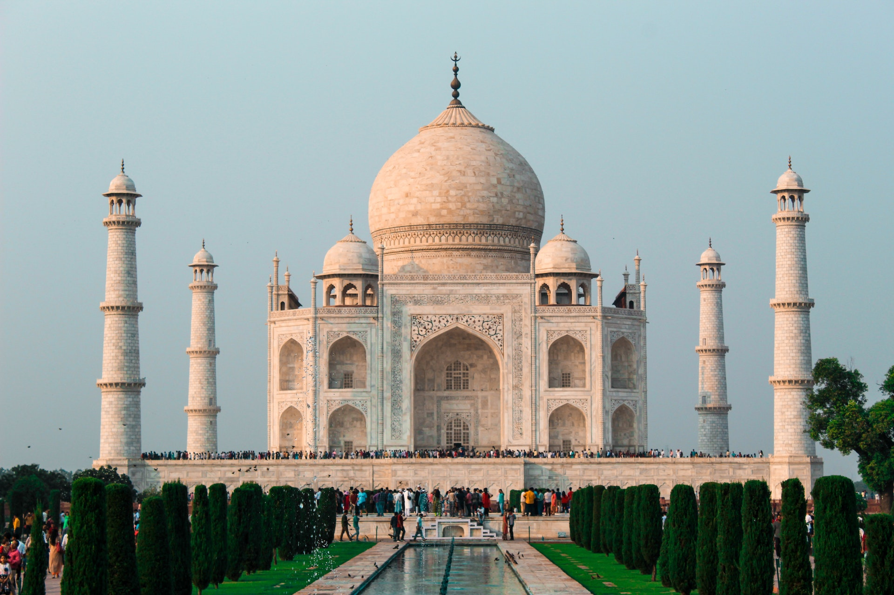
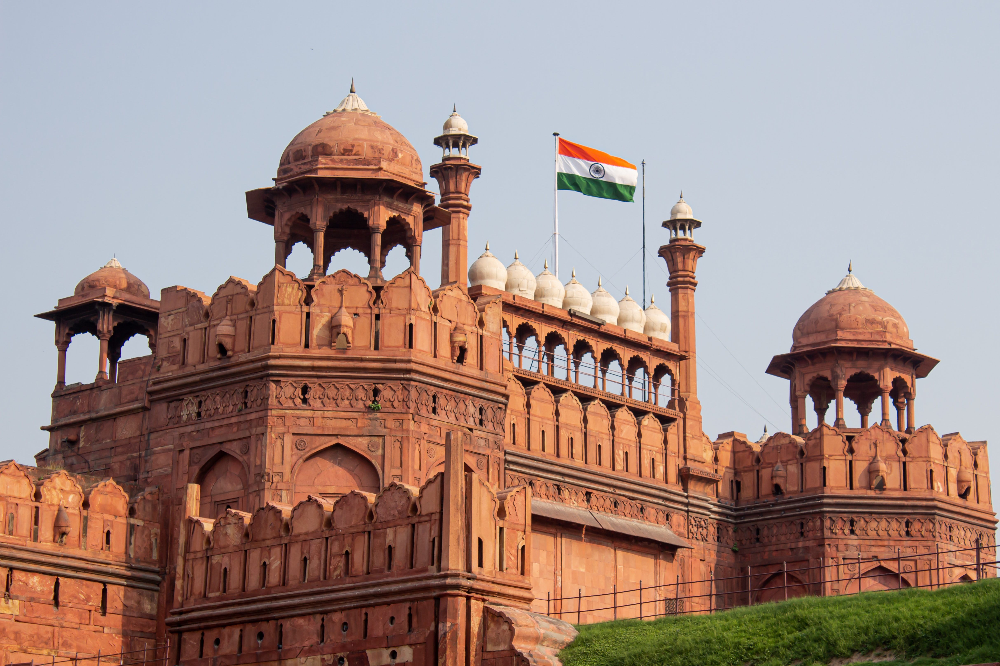
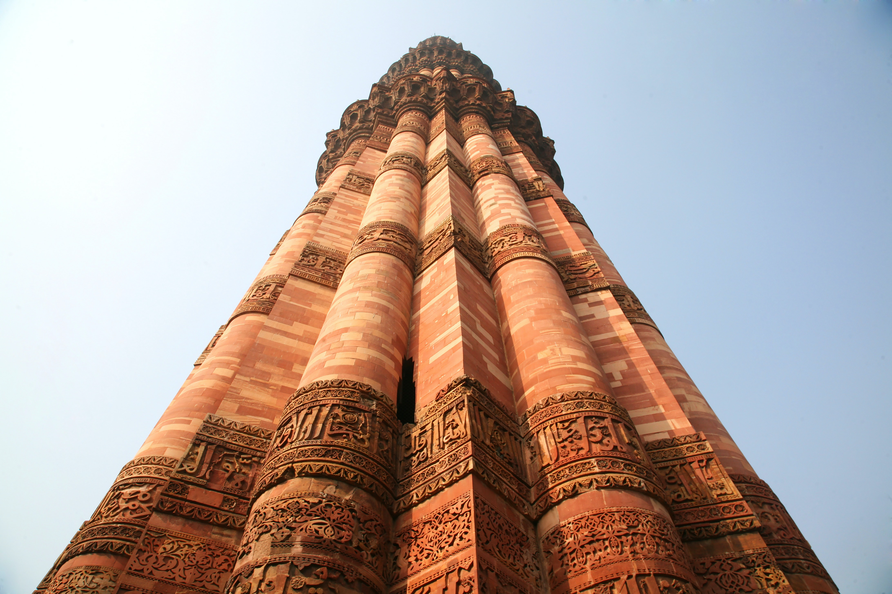
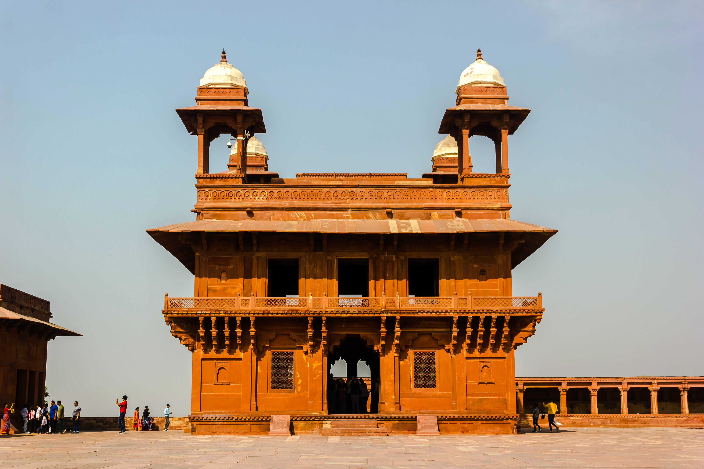
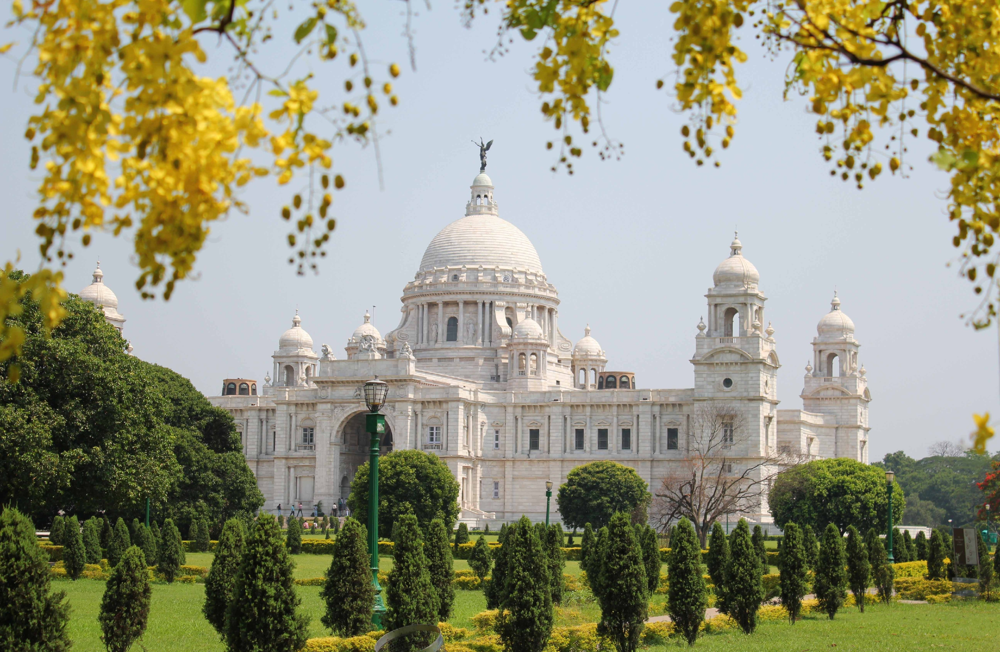

Taz Mahal, Agra

Taz Mahal was built by Shah Jahan, the Mughal emperor, in the memory of Mumtaz Mahal, his third wife.
Red Fort, Delhi

Red Fort popularly known as the Lal Qila, the Red Fort was constructed during Shah Jahan’s reign in the 17th century.
Qutub Minar, Delhi

Built of marble and red sandstone, you can also see many beautiful carvings and intricate designs of the Qutub Minar.
Fatehpur Sikri

An architectural gem and one of the most exquisite historical places in India is Fatehpur Sikri, town in the Agra district of Uttar Pradesh.
Hawa Mahal, Jaipur

Hawa Mahal in Jaipur is one of the best historical places in India, in addition to being a prominent landmark of Rajasthan.
Victoria Memorial

Kolkata’s Victoria Memorial was constructed in honour of Queen Victoria, making it one of the relics of the British Raj.
Humayun's Tomb, Delhi
Amongst the oldest historical places in India, Humayun’s Tomb in Delhi, along the banks of the Yamuna River, was also the first garden-tomb in the country.
India Gate, Delhi

An iconic landmark of Delhi, this sandstone-granite arch gate is amongst the largest war memorials in all of India, and is surrounded by verdant lawns and gardens.
Golden Temple, Punjab

Also known as Sri Harmandir Sahib, the Golden temple is the most important religious site for the Sikhs, and celebrates humanity, tranquillity and brotherhood.